۱
نیا ادارہ بنائیں
diary.html کھولیں اور اوپر «نیا ادارہ بنائیں» دبائیں۔
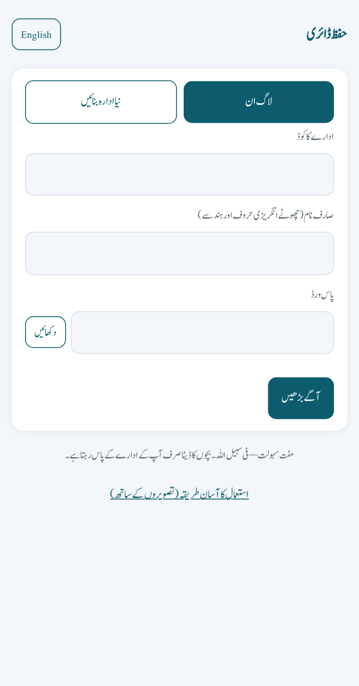
💡 اس صفحے سے آغاز ہوتا ہے۔ جن کے پاس پہلے سے کوڈ ہے وہ «لاگ ان» پر رہیں۔
ادارہ بنانے سے والد کے رپورٹ کارڈ تک، سب کچھ اس ویڈیو میں ہے۔
کام تین حصوں میں ہے۔ اپنا حصہ دبائیں اور مرحلہ وار چلیں۔ پہلا کام ہمیشہ پرنسپل کا ہے۔
سب سے پہلے پرنسپل صرف ایک بار یہ ۶ کام کرے۔ اس کے بعد استاد اور والدین کا کام شروع ہوتا ہے۔
diary.html کھولیں اور اوپر «نیا ادارہ بنائیں» دبائیں۔

💡 اس صفحے سے آغاز ہوتا ہے۔ جن کے پاس پہلے سے کوڈ ہے وہ «لاگ ان» پر رہیں۔
ادارے کا نام، اپنا نام، ای میل، صارف نام اور پاس ورڈ لکھیں۔ پھر «آگے بڑھیں» دبائیں۔
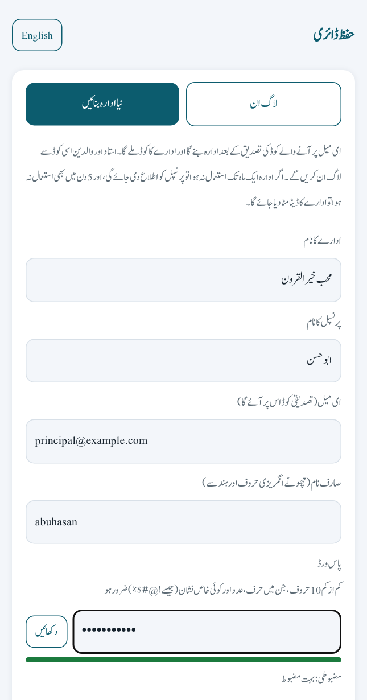
💡 صارف نام: صرف چھوٹے انگریزی حروف اور ہندسے، کم از کم ۳ حروف، خالی جگہ نہیں۔ پاس ورڈ: کم از کم ۱۰ حروف، ایک حرف، ایک عدد اور ایک نشان (جیسے ! @ #)۔ جو خانہ غلط ہو گا وہ سرخ ہو جائے گا اور نیچے لکھا ہو گا کہ کیا لکھنا ہے۔ «دکھائیں» دبا کر دیکھ سکتے ہیں کہ کیا لکھا ہے۔
آپ کی ای میل پر ۶ ہندسوں کا کوڈ آئے گا۔ اسے یہاں لکھ کر «تصدیق کریں» دبائیں۔
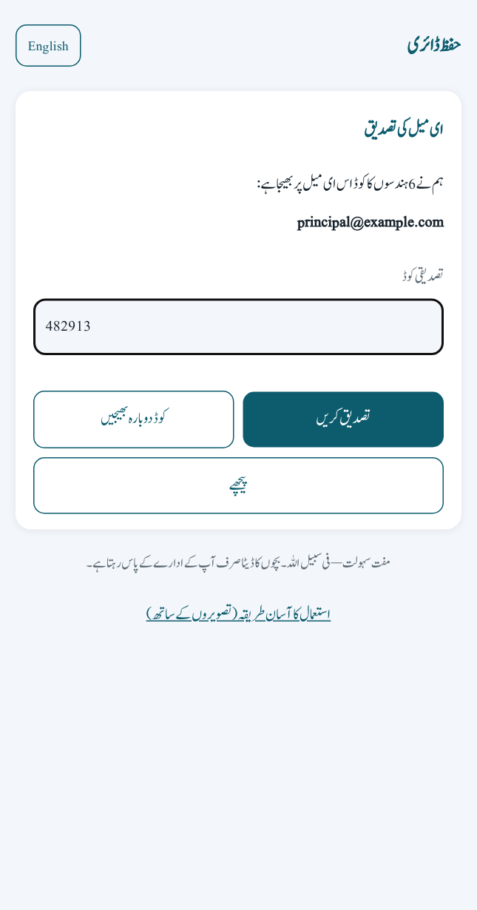
💡 کوڈ ۱۰ منٹ تک چلتا ہے۔ نہ آئے تو «کوڈ دوبارہ بھیجیں» دبائیں اور ای میل کا «سپیم» خانہ بھی دیکھ لیں۔
تصدیق کے بعد آپ کے ادارے کا کوڈ نظر آئے گا۔ اسے کہیں لکھ لیں۔ یہی کوڈ استادوں اور والدین کو دینا ہے۔
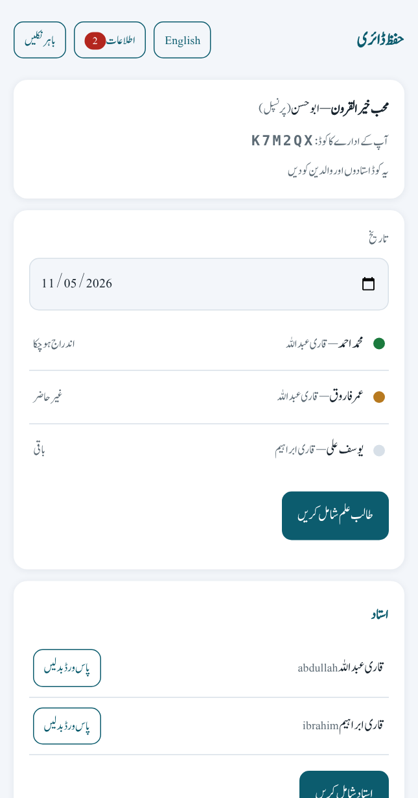
💡 اوپر کارڈ میں ادارے کا کوڈ لکھا ہوتا ہے۔ پاس ورڈ بھی کسی محفوظ جگہ لکھ رکھیں۔
«استاد شامل کریں» دبائیں۔ استاد کا نام، ایک صارف نام اور پاس ورڈ لکھیں۔ پھر «محفوظ کریں» دبائیں۔
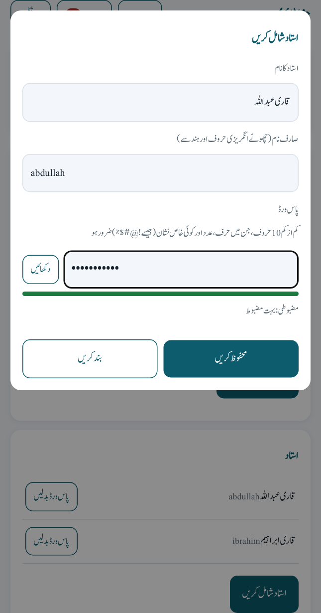
💡 ہر استاد کو یہ صارف نام اور پاس ورڈ بتا دیں۔
«طالب علم شامل کریں» دبائیں۔ طالب علم کا نام لکھیں اور استاد چنیں۔ نیچے والد کا صارف نام اور پاس ورڈ لکھیں۔
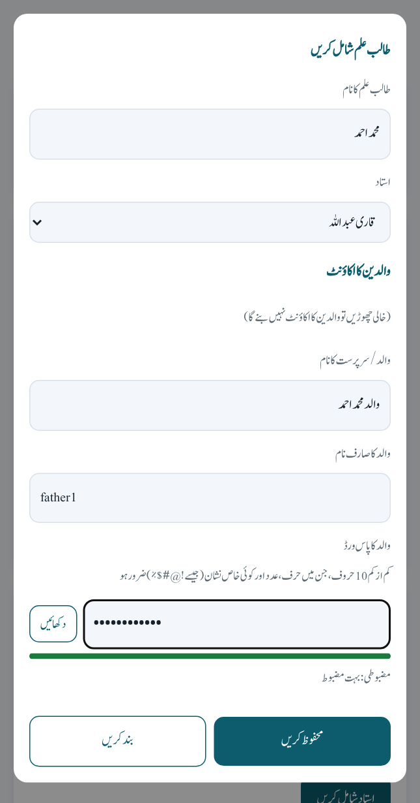
💡 والد کا اکاؤنٹ ضروری نہیں۔ خالی چھوڑیں گے تو وہ نہیں بنے گا۔ بعد میں والد کا اکاؤنٹ جوڑنے کا بٹن ابھی صفحے پر نہیں ہے، اس لیے ابھی بنا لیں۔ ایک ہی والد کے دو بچے ہوں تو دوسرے بچے کے وقت وہی صارف نام لکھیں (پاس ورڈ نہیں)، دونوں بچے ایک ہی اکاؤنٹ میں نظر آئیں گے۔
پرنسپل سے ادارے کا کوڈ، صارف نام اور پاس ورڈ لیں۔ پھر روز یہ ۳ کام کریں۔
استاد diary.html کھولیں۔ «لاگ ان» میں ادارے کا کوڈ، اپنا صارف نام اور پاس ورڈ لکھیں۔
💡 یہ تینوں چیزیں پرنسپل دیتے ہیں۔
لاگ ان کے بعد صرف آپ کے طلبہ نظر آئیں گے۔ اوپر تاریخ ہے، آج کی تاریخ پہلے سے لگی ہوتی ہے۔ ہر نام کے ساتھ نشان ہے: سبز = اندراج ہو گیا، زرد = غیر حاضر، خالی = باقی۔
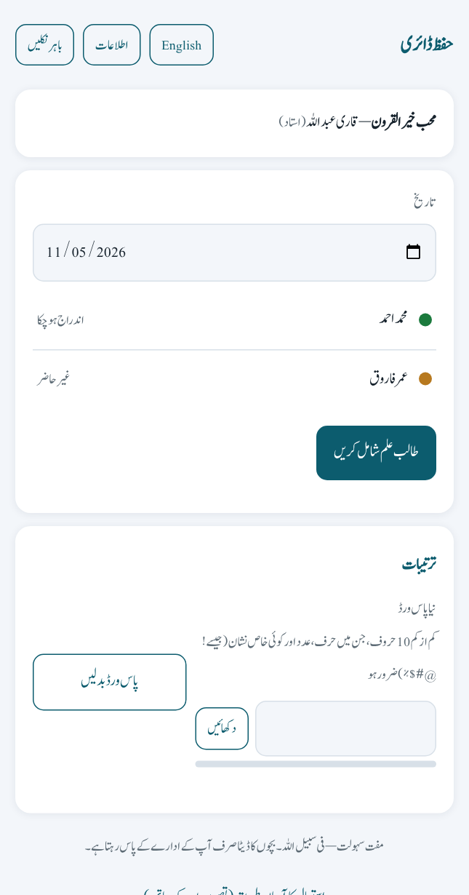
💡 پچھلے دن کا اندراج کرنا ہو تو تاریخ بدل لیں۔
طالب علم کے نام پر دبائیں۔ حاضری، سبق کی لائنیں، کیفیت، سبقی اور منزل کا پارہ اور غلطیاں لکھیں۔ پھر «محفوظ کریں» دبائیں۔
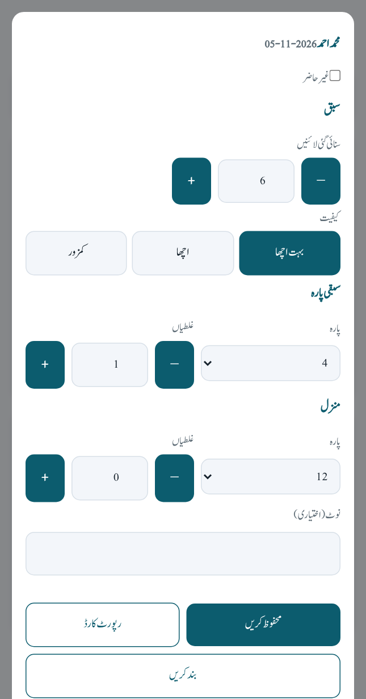
💡 طالب علم غیر حاضر ہو تو صرف «غیر حاضر» پر نشان لگائیں اور محفوظ کریں۔ لائنیں «+» اور «−» سے بھی بڑھا گھٹا سکتے ہیں۔
پرنسپل یا استاد سے ادارے کا کوڈ، صارف نام اور پاس ورڈ لیں۔ پھر ۳ مرحلوں میں رپورٹ دیکھیں۔
والد diary.html کھولیں۔ ادارے کا کوڈ، اپنا صارف نام اور پاس ورڈ لکھیں۔ یہ تینوں چیزیں پرنسپل یا استاد دیتے ہیں۔
💡 والد اندراج نہیں کر سکتے، صرف دیکھ سکتے ہیں۔
«میرے بچے» میں آپ کے بچے کا نام ہو گا۔ نام پر دبائیں۔
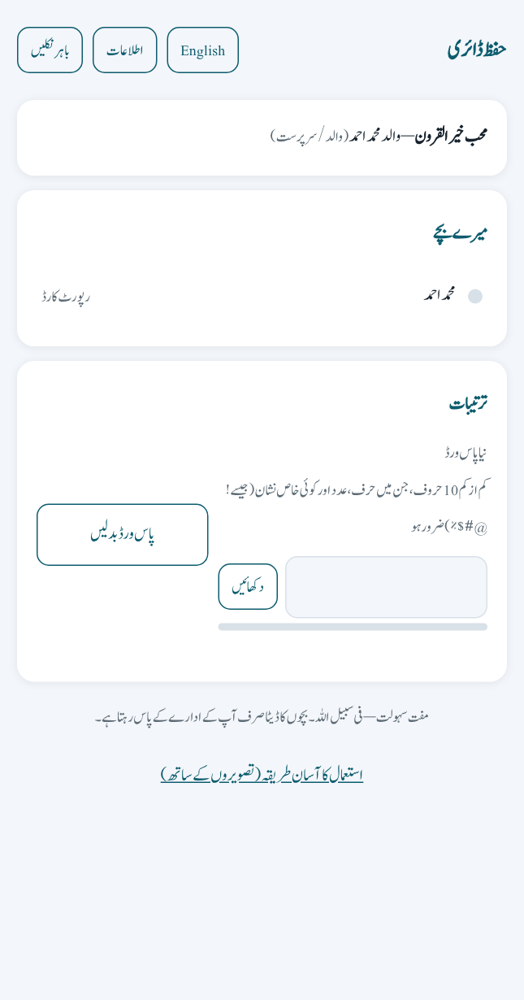
💡 صرف آپ کے اپنے بچے نظر آتے ہیں۔
مہینے کا رپورٹ کارڈ کھل جائے گا۔ اوپر مہینہ بدل کر پچھلے مہینے بھی دیکھ سکتے ہیں۔ چاہیں تو «چھاپیں» دبا کر چھاپ لیں۔
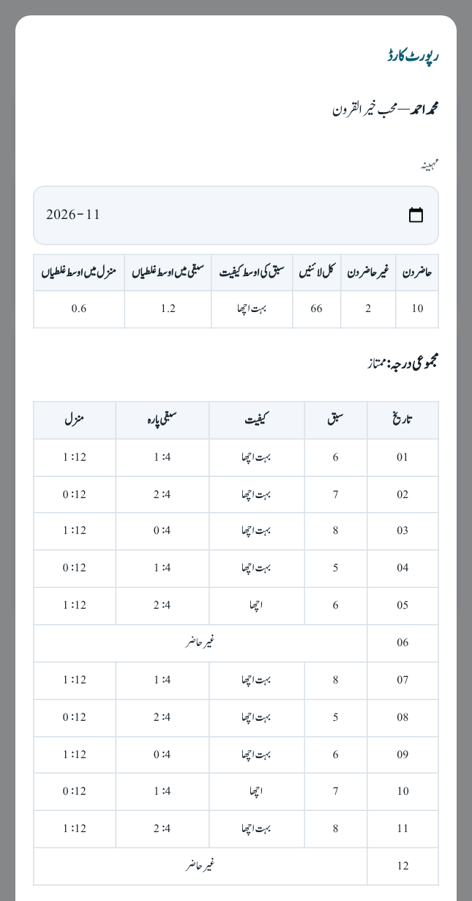
💡 اس میں حاضری، لائنیں، کیفیت، غلطیاں، مجموعی درجہ اور ہر دن کی تفصیل ہوتی ہے۔
نیچے کا پیغام نقل کریں، خالی جگہیں بھریں اور واٹس ایپ پر بھیج دیں۔
السلام علیکم! ہمارے ادارے کی حفظ ڈائری شروع ہو گئی ہے۔ صفحہ: turathkhairalquroon.com/diary.html ادارے کا کوڈ: ________ صارف نام: ________ پاس ورڈ: ________ کھول کر «لاگ ان» میں یہ تینوں چیزیں لکھیں۔
From creating the institution to the father’s report card — all in this video.
The work has three parts. Tap your part and go step by step. The first work is always the principal’s.
First the principal does these 6 things, only once. After that the teachers’ and parents’ work begins.
Open diary.html and tap “Create institution” at the top.
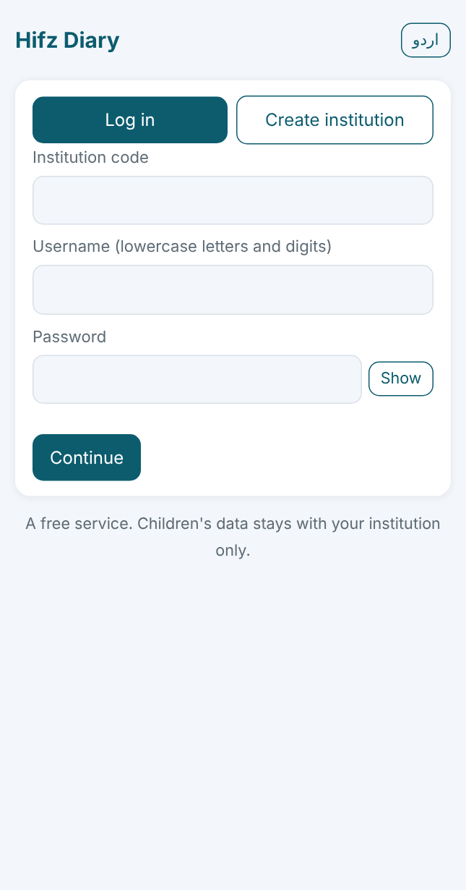
💡 This is where you start. If you already have a code, stay on “Log in”.
Write the institution name, your name, email, username and password. Then tap “Continue”.
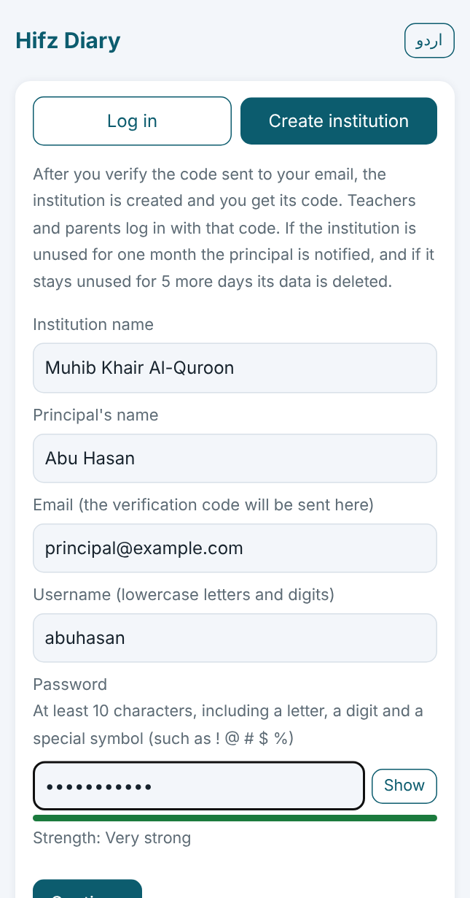
💡 Username: lowercase English letters and digits only, at least 3 characters, no spaces. Password: at least 10 characters with a letter, a digit and a symbol (such as ! @ #). A wrong box turns red and the hint below it says what to write. Tap “Show” to see what you typed.
A 6-digit code comes to your email. Type it here and tap “Verify”.
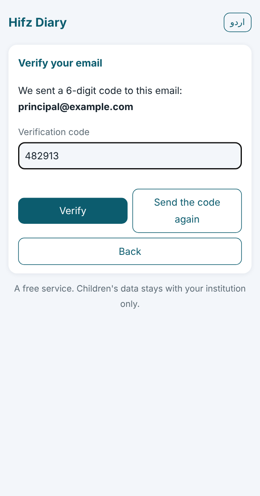
💡 The code works for 10 minutes. If it does not come, tap “Send the code again” and look in the spam folder.
After verifying you see your institution code. Write it down — you give it to teachers and parents.
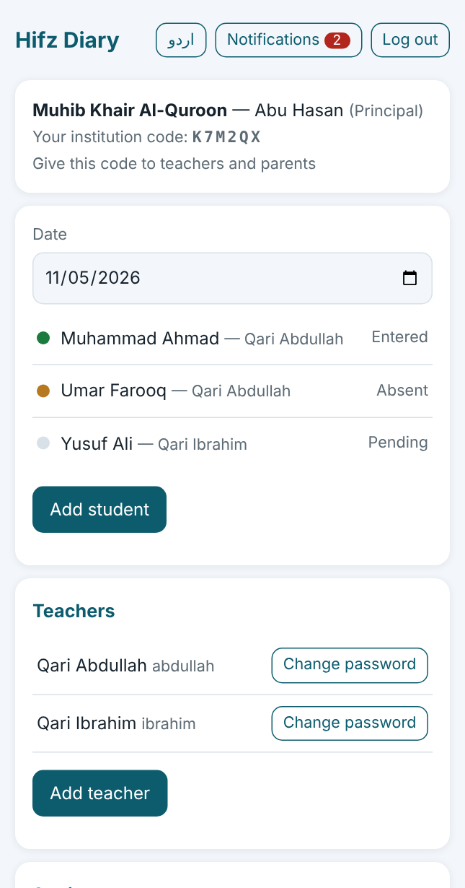
💡 The code is in the top card. Keep your password in a safe place too.
Tap “Add teacher”. Write the teacher’s name, a username and a password, then tap “Save”.
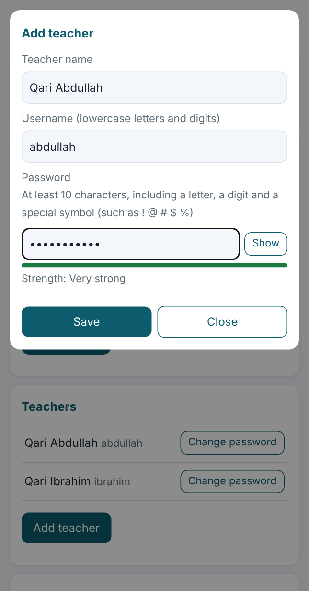
💡 Give each teacher his username and password.
Tap “Add student”. Write the student’s name and choose the teacher. Below, write the parent’s username and password.
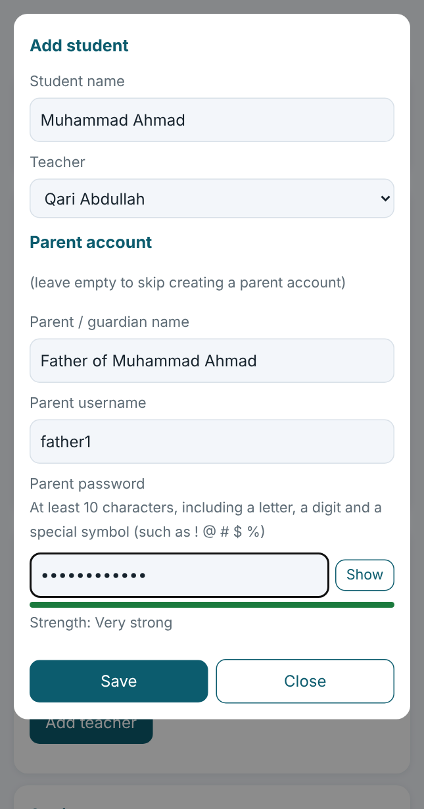
💡 The parent account is optional; if you leave it empty it is not created. There is no button yet to add a parent later, so create it now. If one father has two children, write the same username for the second child (no password) and both children show in one account.
Get the institution code, username and password from the principal. Then do these 3 things every day.
The teacher opens diary.html. In “Log in” write the institution code, your username and password.
💡 The principal gives you these three things.
After logging in you see only your students. The date is at the top, today’s date is already set. Each name has a dot: green = entered, yellow = absent, empty = pending.
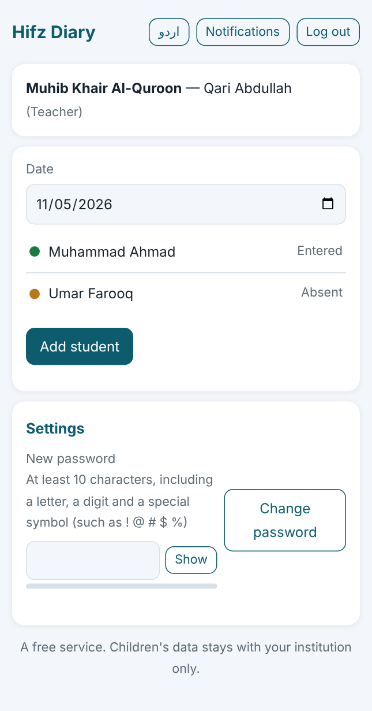
💡 To enter a previous day, change the date.
Tap the student’s name. Fill in attendance, lines recited, quality, the sabqi and manzil para and mistakes. Then tap “Save”.
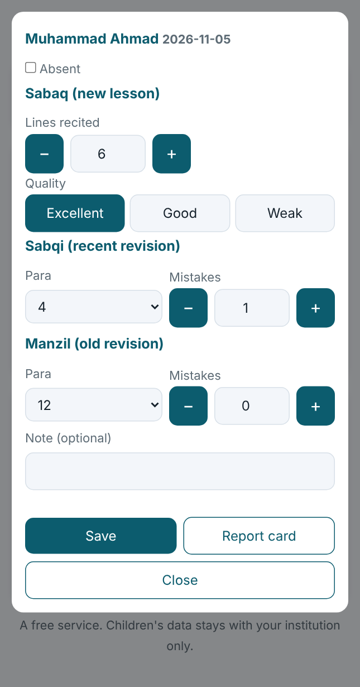
💡 If the student is absent, just tick “Absent” and save. You can also change the lines with “+” and “−”.
Get the institution code, username and password from the principal or the teacher. Then see the report in 3 steps.
The parent opens diary.html. Write the institution code, your username and password. The principal or the teacher gives you these three things.
💡 Parents cannot make entries, they can only view.
Under “My children” you see your child’s name. Tap it.
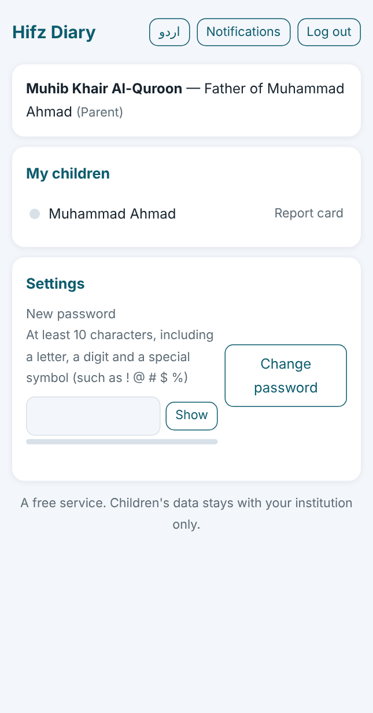
💡 You see only your own children.
The monthly report card opens. You can change the month at the top to see earlier months. Tap “Print” to print it.
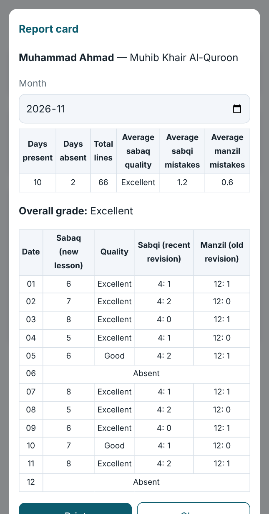
💡 It shows attendance, lines, quality, mistakes, the overall grade and the details of every day.
Copy the message below, fill in the blanks and send it on WhatsApp.
Assalamu alaikum! Our institution’s Hifz Diary has started. Page: turathkhairalquroon.com/diary.html Institution code: ________ Username: ________ Password: ________ Open it and write these three things in “Log in”.